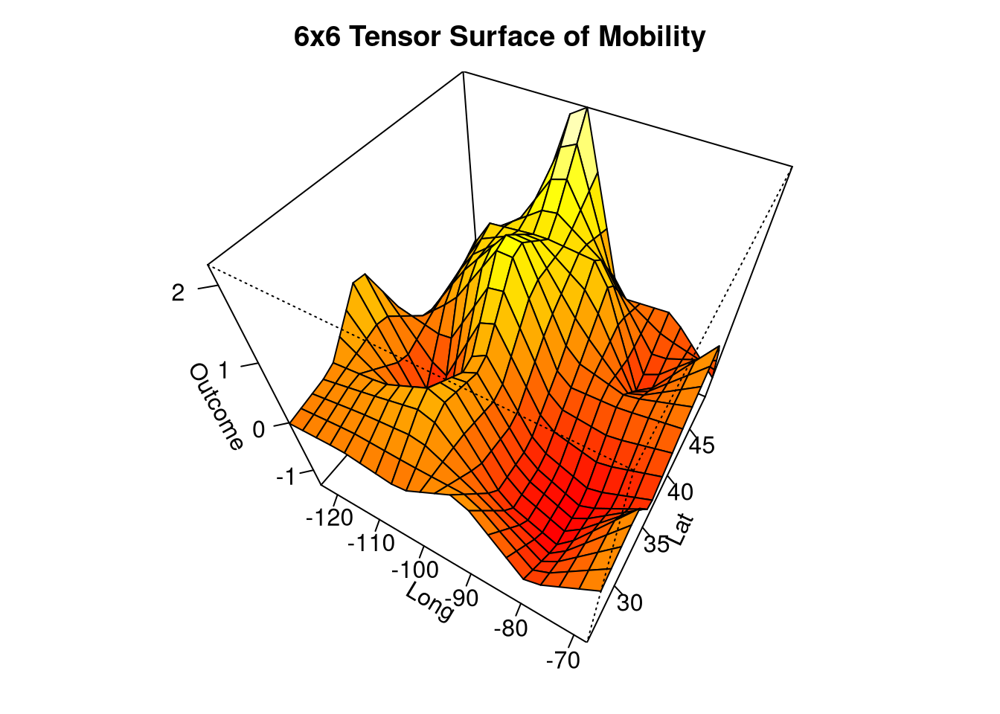

# devtools::install_github("morganwkelly/spatInfer")spatInfer Tutorial
The purpose of spatInfer is to estimate regressions that are robust to the long range trends and medium range autocorrelation that are a feature of spatial observations. Specifically, a spatial basis is added to the regression and standard errors are estimated using large clusters. A feature of spatInfer is its simple workflow, requiring a sequence of only four commands.
The four steps in estimating a spatial basis regression with large cluster inference are
Estimate the optimal spatial basis.
Generate a spatial noise placebo to select the number of clusters for standard error estimation and estimate the placebo significance level of the treatment.
Generate synthetic outcomes to test the null hypothesis that the outcome is spatial noise, independent of the treatment.
Estimate a spatial basis regression using the parameters estimated in the first two steps.
The first step is to download spatInfer.
We begin by loading the spatInfer library and the data frame called opportunity.
library(spatInfer)
library(modelsummary)
library(ggplot2)
library(tinytable)
data(opportunity)The example we will use here is based on the second column of Table VI in Chetty et al’s examination of income mobility across US cities. This consists of the outcome, absolute upward mobility, the treatment of interest fraction of single mothers, and four other controls: fraction short commute, Gini bottom 99%, high school dropout rate, and social capital index. Observations for Alaska and Hawaii are omitted to allow meaningful spatial correlations to be estimated. The longitude and latitude of each observation are included in the data. These must be named X and Y.
1. Choose the Spatial Basis
The first step is to estimate the optimal spatial basis that best explains the outcome variable. The spatial basis serves both to remove long range structure from the data (acting like a systematic version of the 49 state dummies included in the original regression) and to improve inference by allowing smaller clusters of residuals.
We apply the simplest basis possible: a k \times k tensor of linear b-splines and, to minimize the loss of degrees of freedom, we select the first p principal components of the tensor. The first command `optimal_basis` chooses the combination of k and p that minimizes a Bayes Information Criterion. To make the diagram legible, select the maximum basis degree that you want to examine. As with most commands in R it starts with the regression formula and the name of the dataset. Here we will regress mobility on five variables used in Table VI of Chetty et al: the choice of right hand side variables does not matter at this stage.
The treatment of interest is placed as the first on the right hand side. If several are of concern the procedure can be repeated using each as the first entry.
optimal_basis(mobility~single_mothers+short_commute+
gini+dropout_rate+social_cap+dropout_na, opportunity,
max_splines=7)
It can be seen here that the optimal combination is the first 15 principal components of a 6x6 spline. It is notable that this very small number of spatial controls explains 60% of variability in the outcome, compared with 64% obtained by using the 49 state dummies of the original study. Knowing only the location of a place lets you make a decent guess about the likely degree of mobility there, without knowing anything about its other characteristics.
It is useful to plot the tensor surface of intergenerational mobility to see how geometrically simple it is. In The viewpoint is from the southeast of the US and the angular surface reflects the fact that a product of linear B-splines (series of overlapping triangles) is used.
plot_basis(
mobility~single_mothers+short_commute+
gini+dropout_rate+social_cap+dropout_na, opportunity,
splines=6,
Title="6x6 Tensor Surface of Mobility"
)

2. Run Placebo Test
Having chosen a spatial basis, we now need to choose an optimal number of clusters for the residuals. If there are too many, residuals will be correlated between clusters leading to inconsistent standard error estimates, whereas too few will result in unnecessarily wide confidence intervals. To choose the optimal number we use spatial noise placebos.
The placebos are constructed to have the same spatial structure as the treatment, here single mothers. First, the treatment is regressed on the spatial basis terms selected in Step 1. The spatial correlation between the detrended residuals is assumed to decay exponentially so that the correlation between two at distance h apart is \rho \exp (- \theta / h).1 The parameters \rho and \theta are referred to as the structure and range of the correlation. Effective range is 2 \theta: at this distance correlation equals 0.14. These parameters are estimated by maximum likelihood using the fields library and then used to estimate synthetic residuals which are added back onto the predicted treatment values to give the placebo values. The regression is run repeatedly with simulated placebos in place of the real treatment and the p-values of each simulation are recorded.
These placebo p-values give us two useful things. The first is a placebo significance level of the treatment: how often does a placebo have a lower p-value (higher t-statistic) than the treatment.
The second is that the placebos provide a Monte Carlo simulation to evaluate the inference procedure used. If substantially more than 5% of placebo regressions are significant at 5% we can conclude that the standard error estimate is deficient.
Standard errors are estimated using the large cluster procedure of Bester, Conley and Hansen, where observations are partitioned into c large clusters using k-medoids. The placebo Monte Carlos allow an optimal value of c to be picked.
The placebo test is implemented by the command `placebo`. Again this starts off with the formula and data, followed by the tensor degree and number of principal components just picked by optimal_basis, and then the number of simulations. In practice the simulations settle down rapidly and 1000 will give accurate results but you may want to start with around 200 which will quickly give you a good idea of how your data are behaving.2
plbo=placebo(mobility~single_mothers+short_commute+gini+dropout_rate+social_cap+dropout_na, opportunity,
splines=6,
pc_num=15,
nSim=1000,
max_clus = 7
)
placebo_table(plbo)| Adj | Clusters | Est p | Plac p | Plac 5% | CI Width | CI |
|---|---|---|---|---|---|---|
| Moran=15.69, Structure=0.96, Effective Range=0.05, R2=0.46. | ||||||
| Splines=6, PCs=15. | ||||||
| Estimated and placebo p values and proportion of placebo regressions significant at 5%, along with confidence intervals. R2 gives the explanatory power of a regression of the treatment on the principal components. | ||||||
| HC | . | 0 | 0 | 0.13 | 0.28 | [-1.14, -0.86] |
| BCH | 3 | 0.075 | 0.09 | 0.057 | 2.49 | [-2.25, 0.25] |
| 4 | 0.038 | 0.058 | 0.076 | 1.8 | [-1.9, -0.1] | |
| 5 | 0.02 | 0.015 | 0.062 | 1.48 | [-1.74, -0.26] | |
| 6 | 0.012 | 0.013 | 0.06 | 1.33 | [-1.66, -0.34] | |
| BCH | 7 | 0.003 | 0.008 | 0.08 | 1.01 | [-1.51, -0.49] |
Placebo generates a table where the top row uses heteroskedasticity consistent standard errors: if spatial correlation in residuals turns out to be unimportant these are the ones to use. Below this are large cluster (Bester-Conley-Hansen) standard errors, starting with three and going up to six. The second column gives the estimated p-value of the treatment variable from a regression that includes spatial basis terms. As the number of clusters increases this will generally fall.
The next column gives the placebo p-value: the proportion of simulations where the placebo had a lower p-value than the real treatment.
Following this, and highlighted in orange, is the percentage of simulations where the placebo is significant at 5%. If this is markedly higher than 5% it suggests that the inference method employed was inadequate. In practice a value in the range of 0.05 to 0.07 or 0.08 indicates satisfactory performance.
The next column gives the width of the confidence interval associated with each cluster and allows an informal size-power tradeoff: increasing the proportion above 5% to, say, 7% is desirable if it leads to a marked narrowing of the confidence interval. In this case here, 5 or 6 clusters give very similar values with 6% of simulations significant at 5% suggesting that these are reasonable numbers: by contrast 13% of HC simulations are significant. We will report regression results for both below. For six clusters the placebo p-value of 0.01 equals the regression estimate of 0.01 and the confidence interval for the parameter is [-1.66,-0.34].
It will sometimes happen that the proportion of placebos significant at 5% stays considerably above 5% regardless of the cluster number. In that case systematically increasing, or sometimes decreasing, the number of principal components num_pc by one or two will usually give a satisfactory placebo value.
Below the Table are a number of diagnostics and descriptive statistics. Most important is the Moran statistic, the Z-score of the null hypothesis that the correlation between each residual and its nearest neighbours is zero. We use 5 neighbours here: altering this does not alter the results materially.3
In deciding whether to use a familiar HC standard error or a large cluster one we have adopted the rule of thumb that if this has a low Moran statistic and a 5% placebo value close to 0.05 it should be used, given its tighter confidence intervals. Otherwise a BCH cluster below 0.08 is picked.
Below the Moran statistic are the spatial parameters. R2 gives the explanatory power of the regression of the treatment on the spatial basis variables, in this case 0.46. Next is the structure \rho of the residuals and then the effective range (where correlation has fallen to 0.14) expressed as a fraction of the 95th percentile of distance between points.
Here it can be seen that structure and effective range are 0.96 and 0.05 respectively. Finally the degree of the tensor and the number of principal components used to approximate the outcome are reported.
3. Run a Synthetic Outcome Test
Following the placebo test, the next step is to calculate the synthetic outcome p-value: Can we reject the null hypothesis that the outcome is trending spatial noise, and therefore independent of the treatment?
An important thing about the synthetic outcome test is that it can be computed in situations where there is a binary treatment so a placebo test cannot be estimated. In this case it is best to report the p-values for a range of cluster values from 3 to 5 or more to allow readers to judge the robustness of the results.
We assume that the outcome is generated as a quadratic in longitude and latitude. Noise is generated using maximum likelihood estimates of the residuals’ spatial parameters: here there is a structure of 0.88 and an effective range of 0.15.
synt_bch=synth(mobility~single_mothers+short_commute+gini+dropout_rate+social_cap+dropout_na, opportunity,
splines=6,
pc_num=15,
nSim=1000,
max_clus = 7)
synth_table(synt_bch)| Adj | Clusters | Est p | Synth p | CI Width | CI |
|---|---|---|---|---|---|
| Moran=15.69, Structure=0.88, Effective Range=0.15, R2=0.43. | |||||
| N=693, Splines=6, PCs=15. | |||||
| Estimated and synthetic outcome p values for different cluster numbers. R2 gives the explanatory power of a regression of the outcome on a quadratic in longitude and latitude. | |||||
| HC | . | 0 | 0 | 0.28 | [-1.14, -0.86] |
| BCH | 3 | 0.075 | 0.14 | 2.49 | [-2.25, 0.25] |
| 4 | 0.038 | 0.059 | 1.8 | [-1.9, -0.1] | |
| 5 | 0.02 | 0.041 | 1.48 | [-1.74, -0.26] | |
| 6 | 0.012 | 0.041 | 1.33 | [-1.66, -0.34] | |
| BCH | 7 | 0.003 | 0.011 | 1.01 | [-1.51, -0.49] |
For the five or six clusters chosen by the placebo test, the synthetic outcome significance level is 0.04, somewhat higher than the placebo one.
4. Estimate the Spatial Basis Regression
The fact that the placebo and synthetic outcome significance levels closely match the regression one gives us considerable confidence in the reliability of the regression estimate. We therefore estimate a regression with 15 principal components of a 6x6 spline, and compute standard errors using both five and six k-medoids clusters.
For comparison we also include the original regression with state dummies and residuals clustered by state. The state dummies act as a spatial basis in this regression with 48 variables as opposed to the 15 used in the basis regressions.
Because t-statistics for BCH regressions are not readily interpretable given their low degrees of freedom (for instance, the 5% significance level for 5 clusters is 2.8), the Table reports confidence intervals and p-values.
Basis_5=basis_regression(mobility~single_mothers+short_commute+gini+dropout_rate+social_cap+dropout_na, opportunity,
splines=6,pc_num=15,
clusters=5)
Basis_6=basis_regression(mobility~single_mothers+short_commute+gini+dropout_rate+social_cap+dropout_na, opportunity,
splines=6,pc_num=15,
clusters=6)
Original=fixest::feols(mobility~single_mothers+short_commute+gini+dropout_rate+social_cap+dropout_na+state_id, opportunity,
cluster= ~state_id)
modelsummary(list(Clustered=Original,
`Basis 5`=Basis_5,
`Basis 6`=Basis_6),
statistic = c("conf.int","p = {p.value}"),
coef_omit = c("Intercept|PC*|dropout_na|state*"), #omit basis and intercept
gof_map = c("nobs", "r.squared"),
fmt=2,
notes="Clustered is a standard regression estimate without a spatial basis and clustered by state. Basis 5 and 6 use 11 principal components of a 6x6 linear b-spline basis, with 5 and 6 k-medoids clusters respectively.")| Clustered | Basis 5 | Basis 6 | |
|---|---|---|---|
| Clustered is a standard regression estimate without a spatial basis and clustered by state. Basis 5 and 6 use 11 principal components of a 6x6 linear b-spline basis, with 5 and 6 k-medoids clusters respectively. | |||
| single_mothers | -0.49 | -0.51 | -0.51 |
| [-0.64, -0.35] | [-0.88, -0.13] | [-0.84, -0.17] | |
| p = <0.01 | p = 0.02 | p = 0.01 | |
| short_commute | 0.31 | 0.26 | 0.26 |
| [0.25, 0.38] | [0.05, 0.46] | [0.10, 0.42] | |
| p = <0.01 | p = 0.03 | p = <0.01 | |
| gini | 0.01 | 0.00 | 0.00 |
| [-0.06, 0.08] | [-0.09, 0.08] | [-0.06, 0.05] | |
| p = 0.70 | p = 0.89 | p = 0.84 | |
| dropout_rate | -0.10 | -0.10 | -0.10 |
| [-0.17, -0.02] | [-0.24, 0.05] | [-0.20, 0.01] | |
| p = 0.01 | p = 0.15 | p = 0.07 | |
| social_cap | 0.05 | 0.08 | 0.08 |
| [-0.05, 0.15] | [-0.09, 0.25] | [-0.07, 0.23] | |
| p = 0.29 | p = 0.26 | p = 0.23 | |
| Num.Obs. | 693 | 693 | 693 |
| R2 | 0.877 | 0.842 | 0.842 |
Next we can plot confidence intervals for the regressions. It is evident that the confidence interval for single mothers has grown substantially wider, and that the effects of commuting distance and, especially, social capital have fallen considerably.
modelplot(list(Clustered=Original,
`Basis 5`=Basis_5,
`Basis 6`=Basis_6),
coef_omit = c("Intercept|PC*|dropout_na|state*")
)+
geom_vline(xintercept=0,color="red",linewidth=0.25,linetype=3)IM Inference
Besides BCH standard errors, there is another spatial inferential method based on large clusters due to Ibragimov and Mueller. This involves running the regression of interest on each cluster and collecting the estimated coefficients of the treatment \hat{\beta}_c for each cluster c. The p-value of a regression of these coefficients on a constant is conservative up to a value of 0.08. Once again the optimal number of clusters is chosen by the fraction of placebo regressions that are significant at 5%.
plbo_im=placebo_im(mobility~single_mothers+short_commute+gini+dropout_rate+social_cap+dropout_na, opportunity,
splines=6,
pc_num=15,
nSim=1000,
max_clus = 7
)
placebo_table(plbo_im)| Adj | Clusters | Est p | Plac p | Plac 5% | CI Width | CI |
|---|---|---|---|---|---|---|
| Moran=15.69, Structure=0.96, Effective Range=0.05, R2=0.46. | ||||||
| Splines=6, PCs=15. | ||||||
| Estimated and placebo p values and proportion of placebo regressions significant at 5%, along with confidence intervals. R2 gives the explanatory power of a regression of the treatment on the principal components. | ||||||
| HC | . | 0 | 0 | 0.13 | 0.28 | [-1.14, -0.86] |
| IM | 3 | 0.057 | 0.053 | 0.046 | 2.14 | [-2.07, 0.07] |
| 4 | 0.023 | 0.024 | 0.046 | 1.48 | [-1.74, -0.26] | |
| 5 | 0.008 | 0.004 | 0.054 | 1.13 | [-1.56, -0.44] | |
| 6 | 0.003 | 0.002 | 0.042 | 0.93 | [-1.46, -0.54] | |
| IM | 7 | 0.002 | 0.002 | 0.054 | 0.93 | [-1.46, -0.54] |
It can be seen that with five clusters, the proportion of placebo regressions significant at 5% is 0.05. The regression, placebo and synthetic outcome p values are 0.01, 0.004, and 0.01 respectively, not markedly different from BCH.
syn_im=synth_im(mobility~single_mothers+short_commute+gini+dropout_rate+social_cap+dropout_na, opportunity,
splines=6,
pc_num=15,
nSim=1000,
max_clus = 7)
synth_table(syn_im)| Adj | Clusters | Est p | Synth p | CI Width | CI |
|---|---|---|---|---|---|
| Moran=15.69, Structure=0.88, Effective Range=0.15, R2=0.43. | |||||
| N=693, Splines=6, PCs=15. | |||||
| Estimated and synthetic outcome p values for different cluster numbers. R2 gives the explanatory power of a regression of the outcome on a quadratic in longitude and latitude. | |||||
| HC | . | 0 | 0 | 0.28 | [-1.14, -0.86] |
| IM | 3 | 0.057 | 0.055 | 2.14 | [-2.07, 0.07] |
| 4 | 0.023 | 0.022 | 1.48 | [-1.74, -0.26] | |
| 5 | 0.008 | 0.007 | 1.13 | [-1.56, -0.44] | |
| 6 | 0.003 | 0.002 | 0.93 | [-1.46, -0.54] | |
| IM | 7 | 0.002 | 0.004 | 0.93 | [-1.46, -0.54] |
Given that the IM confidence interval is considerably wider than the BCH one ( [-1.56,-0.44] here, compared with [-0.88,-0.13]) as is usually the case, the similar p-values arise because its central value is far lower than the BCH one. If we repeat the exercise for the other variables, short commute again has similar p-values to BCH and a high but wide interval. The other three variables have wide intervals centred near zero.
x <- data.frame(
Var=c("single_mothers","short_commute","gini" , "dropout_rate","short_commute"),
reg=c(0.01,0.01,0.26,0.23,0.78),
placebo=c(0.00,0.01,0.21,0.21,0.80),
synth=c(0.01,0.02,0.29,0.23,0.77),
CI=c("[-1.56,-0.44]","[0.33,1.67]","[-3.14,1.14]","[-2.98,0.98]","[-8.52,10.52]")
)
tt(x,caption="Regression, placebo, and synthetic p-values along with confidence intervals using IM inference.")| Var | reg | placebo | synth | CI |
|---|---|---|---|---|
| single_mothers | 0.01 | 0.00 | 0.01 | [-1.56,-0.44] |
| short_commute | 0.01 | 0.01 | 0.02 | [0.33,1.67] |
| gini | 0.26 | 0.21 | 0.29 | [-3.14,1.14] |
| dropout_rate | 0.23 | 0.21 | 0.23 | [-2.98,0.98] |
| short_commute | 0.78 | 0.80 | 0.77 | [-8.52,10.52] |
Footnotes
The exponential kernel is a special case of the Matern function with smoothness parameter of 0.5, and in principle the optimal smoothing parameter can be chosen by maximum likelihood. In practice this makes little difference: as smoothness increases the estimated range \theta falls, leaving correlation more or less unchanged.↩︎
The placebo and synthetic outcome tests run in parallel by default. If you encounter computational problems you should set the option
Parallel=FALSEin each command. For large datasets, estimating the necessary Cholesky decomposition of the correlation matrix and the k-medoids clusters can be time-consuming, and fast approximations can be used by settingk_medoids=FALSEandexact_cholesky=FALSEin theplacebocommand. The latter requires theBRISCpackage.↩︎See Table 3 in Conley and Kelly.↩︎